边坡曲率对稳定性的影响
问题描述
注意
本示例的项目文件可在 FLAC3D 中查看/运行。[1] 该项目的主数据文件见本示例末尾（main data file）。
实际边坡并非无限长且笔直：它们通常在平面和立面上都是弯曲的。边坡曲率的影响实际上只能用三维模型来分析。
Hoek 和 Bray（1981）观察到，随着边坡变得更加凹入，潜在边坡破坏体两侧材料所提供的侧向约束将增大。他们建议，当边坡的曲率半径小于边坡高度时，允许的坡角可比常规二维稳定性分析所建议的角度陡 10°。此外，对于大于两倍边坡高度的曲率半径，应采用二维分析给出的最大坡角。
图 1（Figure 1） 所示的模型代表露天矿的四分之一剖面。边坡高度为 25 m，坡角为 2 竖直比 1 水平（约 63°）。预期沿 \(y\) = -30 平面（见图 2（Figure 2））将以平面应变条件为主，而在 \(x\) = 0 平面（见图 3（Figure 3））处轴对称条件将占主导。
本问题所施加的自由水面见图 4（Figure 4）。该水面在坡脚后方 50 m 处与模型顶部相交，且坡面下半部有渗流。在稳态条件下，该地下水位面将导致图 5（Figure 5） 所示的孔隙压力分布。

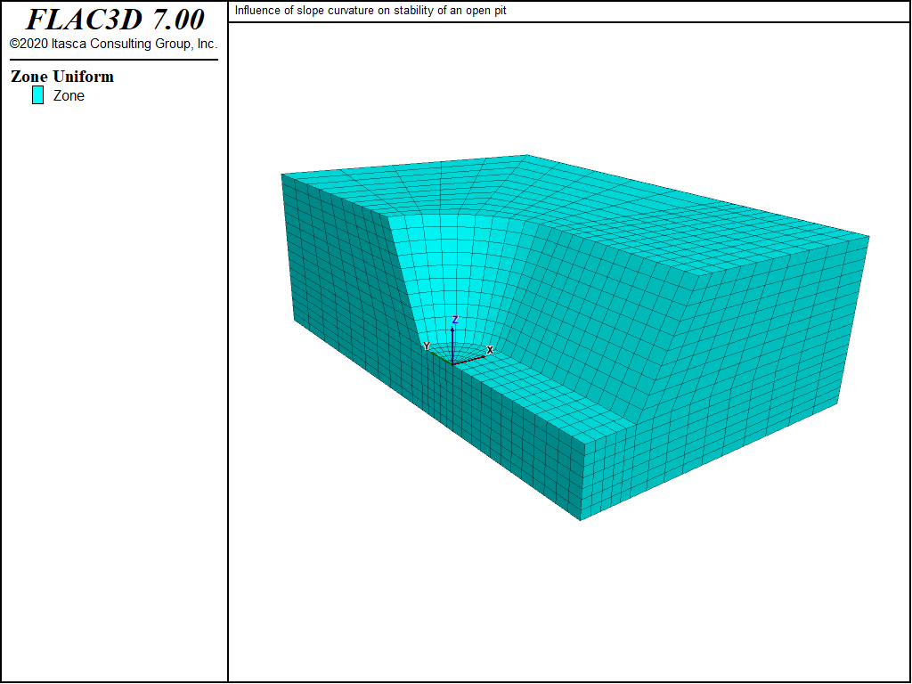
图 1：用于评价边坡曲率的“浴缸”模型。

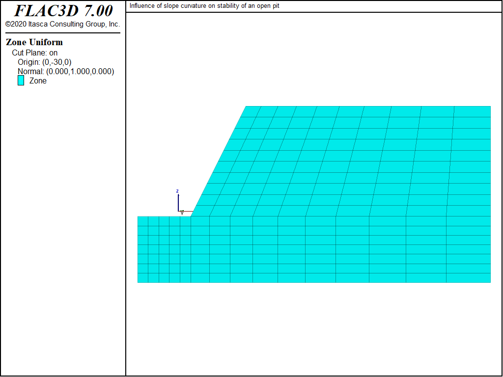
图 2：\(y\) = -30 处穿过模型的竖直平面。

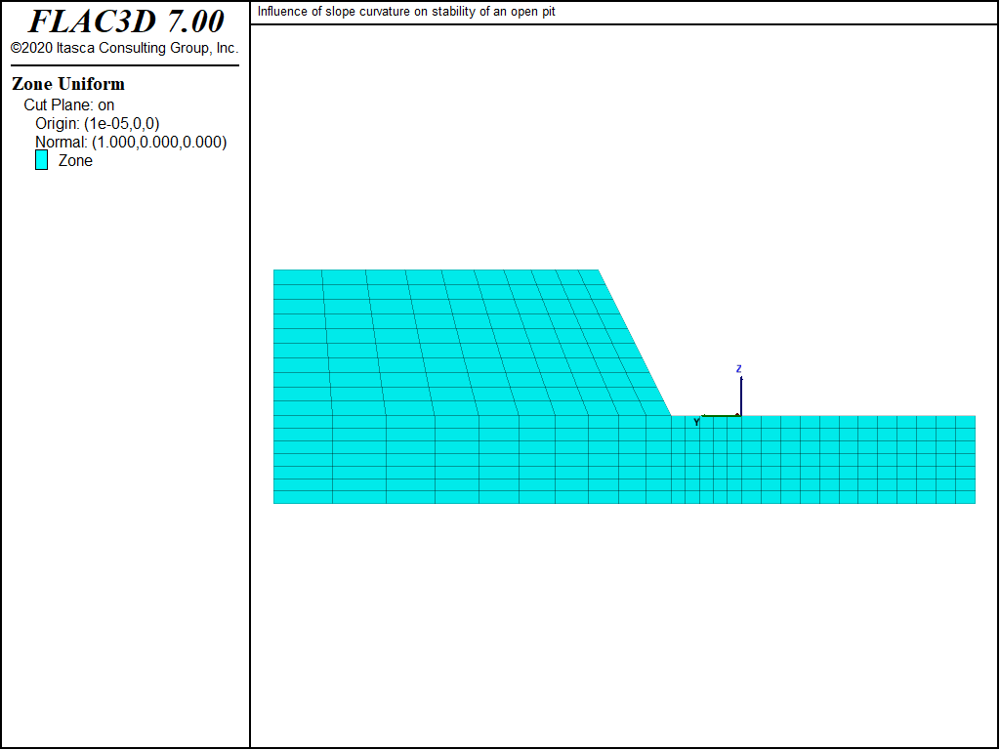
图 3：\(x\) = 0 处穿过模型的竖直平面。

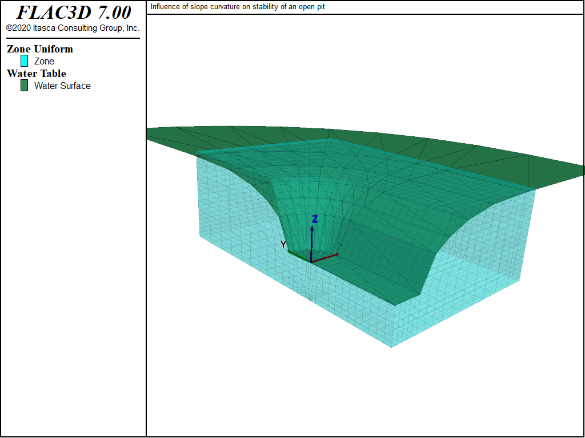
图 4：自由水面。

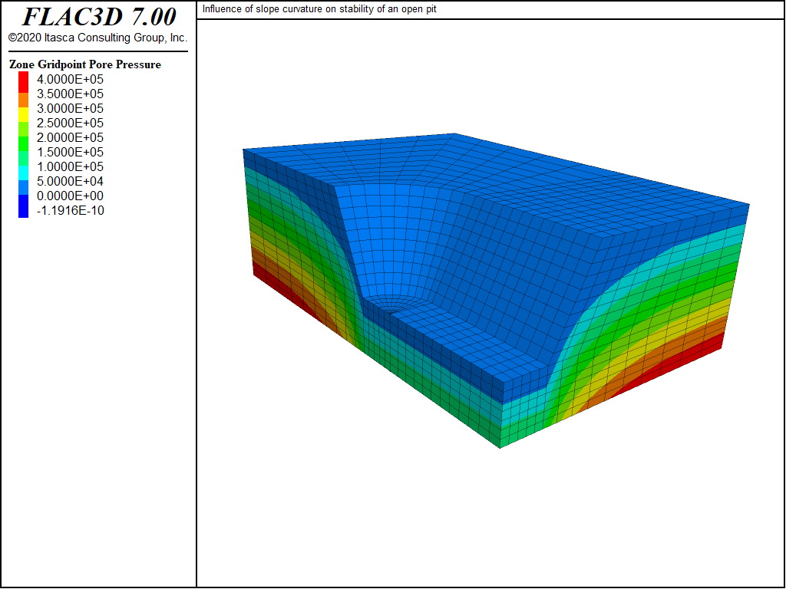
图 5：孔隙压力云图。
为本模型选择的强度参数，是为了将 FLAC3D 结果与 Hoek 和 Bray（1981）发表的圆弧破坏图表进行比较。图 6（Figure 6） 给出了根据地下水流动条件应选用哪张图表。在本例中，所用图表为第 4 号。例如，若假定摩擦角为 45°（tan\(ϕ\) = 1）且安全系数 \(F\) = 1，则可在第 4 号图表中画一条水平线（见图 7（Figure 7）），直至与 63° 的坡角相交。若再画一条竖直线，可得到 \(c\)/\(γ``H``F\) 的值 0.06。对于重度 \(γ\) 为 25,000 N/m3、高度 \(H\) 为 25 m 的情况，可得黏聚力为 37.5 kPa。
本分析中选用黏聚力 100 kPa，以便从稳定边坡开始计算。于是 \(c\)/\(γ``H\)tan\(ϕ\) 的值为 0.16，并利用图 7（Figure 7） 可得 \(c\)/\(γ``H``F\) 的值为 0.1，\(F\) 为 1.61。
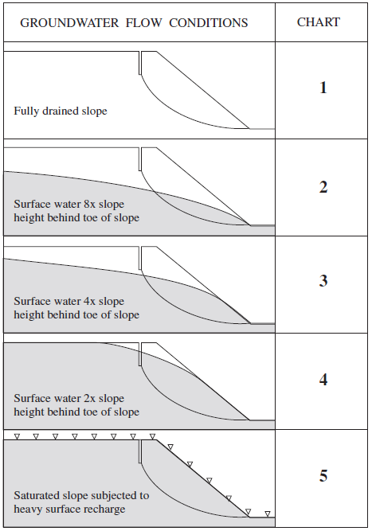
图 6：图表编号随地下水流动条件的变化（改绘自 Hoek 和 Bray 1981）。
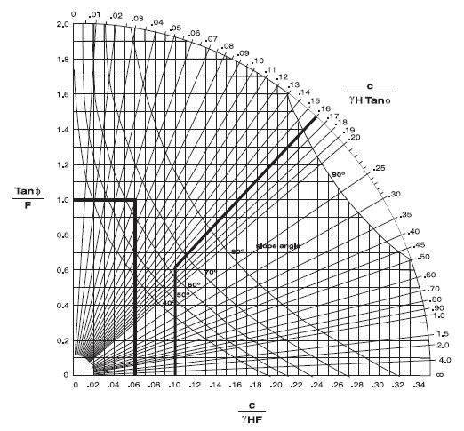
图 7：第 4 号圆弧破坏图表（Hoek 和 Bray 1981）。
建模步骤
图 1（Figure 1） 所示的 FLAC3D 模型是使用块体构建窗格交互创建的。使用状态记录窗格将结果转换为名为“geometry.dat”的数据文件。在恢复任一生成的数据文件后，即可查看块体构建窗格中的内容。
自由水面由 DXF 文件导入。在本例中，该 DXF 文件是通过文件“create-water.dat”中的 FISH 创建的，但它也可以轻易地来自任何来源。
为模型指定 Mohr-Coulomb 材料模型和若干性质：
| 体积模量 | 200 MPa |
| 剪切模量 | 100 MPa |
| 摩擦角 | 45° |
| 黏聚力 | 100 kPa |
| 抗拉强度极限 | 100 kPa |
干材料的质量密度为 2500 kg/m3，饱和材料的质量密度为 2600 kg/m3，重力加速度指定为 10 m/sec2，作用方向为 \(z\) 的负方向。使用 geometry-count 范围元素将饱和密度赋予地下水位面以下的网格单元。模型侧面设置滚动边界，模型底部固定。
采用强度折减法、使用 设置安全系数分析参数（model factor-of-safety） 命令计算安全系数。收敛准则改为 local-ratio 为 1e-3，因为这比默认条件更严格。
计算得到 \(F\) 的值为 1.70。这略高于圆弧破坏图表给出的安全系数，表明边坡曲率对稳定性有轻微影响。所得的破坏面由图 8（Figure 8） 所示的位移云图描绘；该图是在恢复文件“slopefos-Unstable.f3sav”之后绘制的。该图表明，沿“浴缸”的长边发展出一个“勺形”破坏面，但边坡最终是稳定的。

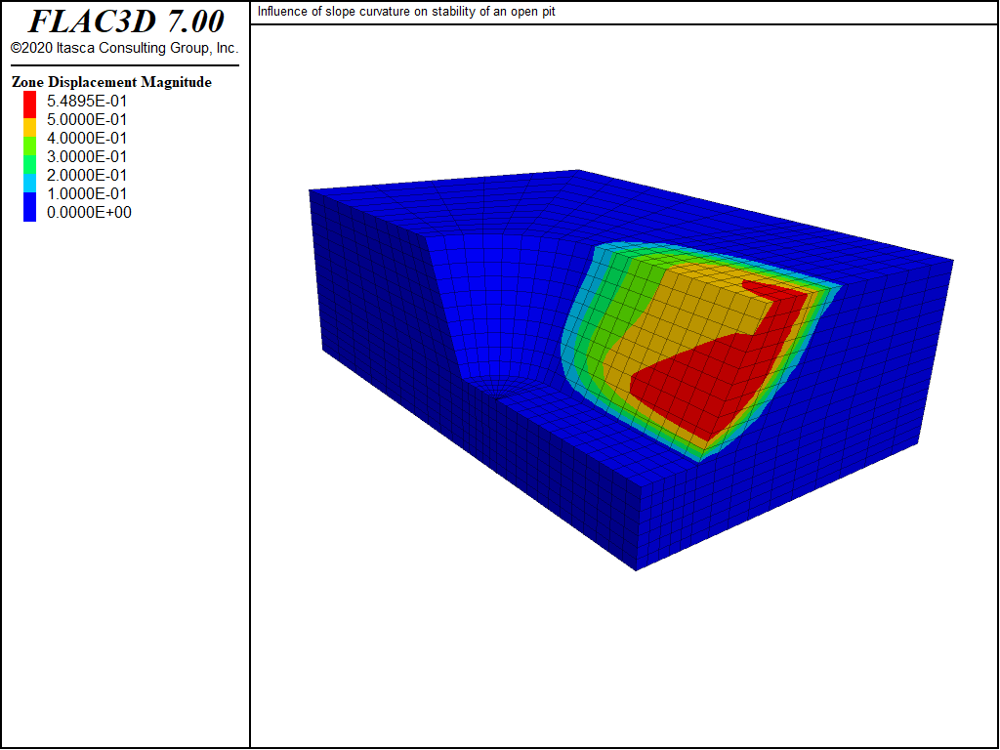
图 8：破坏状态下 FLAC3D 模型中的位移云图。
该问题还使用二维程序 FLAC 在平面应变模式（见数据文件“SL-PS.DAT”）和轴对称模式（见数据文件“SL-AXI.DAT”）下进行了计算。模型几何按 FLAC3D 模型的竖直剖面（见图 9（Figure 9））建立。
平面应变模型的安全系数计算值与圆弧破坏图表的结果一致，\(F\) = 1.61。破坏时的位移云图和矢量图显示出与 FLAC3D 相似的破坏面。可将图 8（Figure 8） 与图 11（Figure 11） 进行比较，后者绘出了 \(y\) = -30 处穿过 FLAC3D 模型的竖直平面上的位移云图和矢量。
轴对称模型的安全系数计算得到 \(F\) = 2.35。这进一步表明，曲率越大，边坡越稳定。

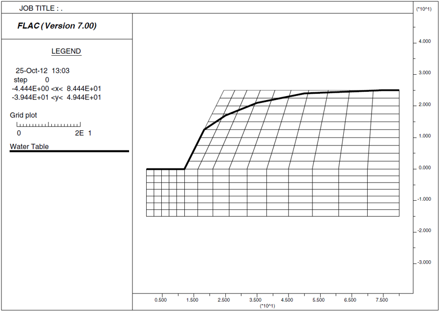
图 9：FLAC 模型网格。

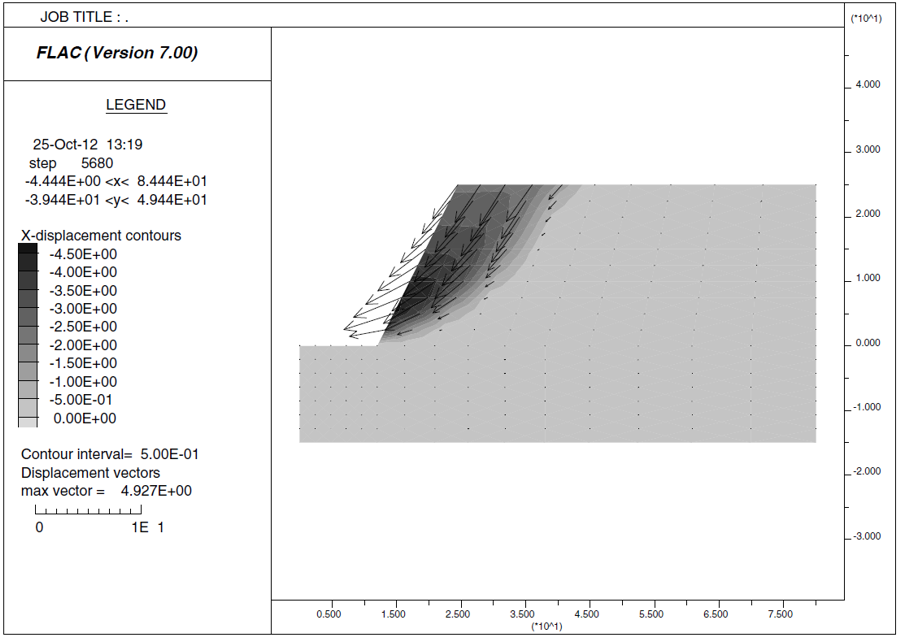
图 10：平面应变 FLAC 模型的位移云图和矢量。

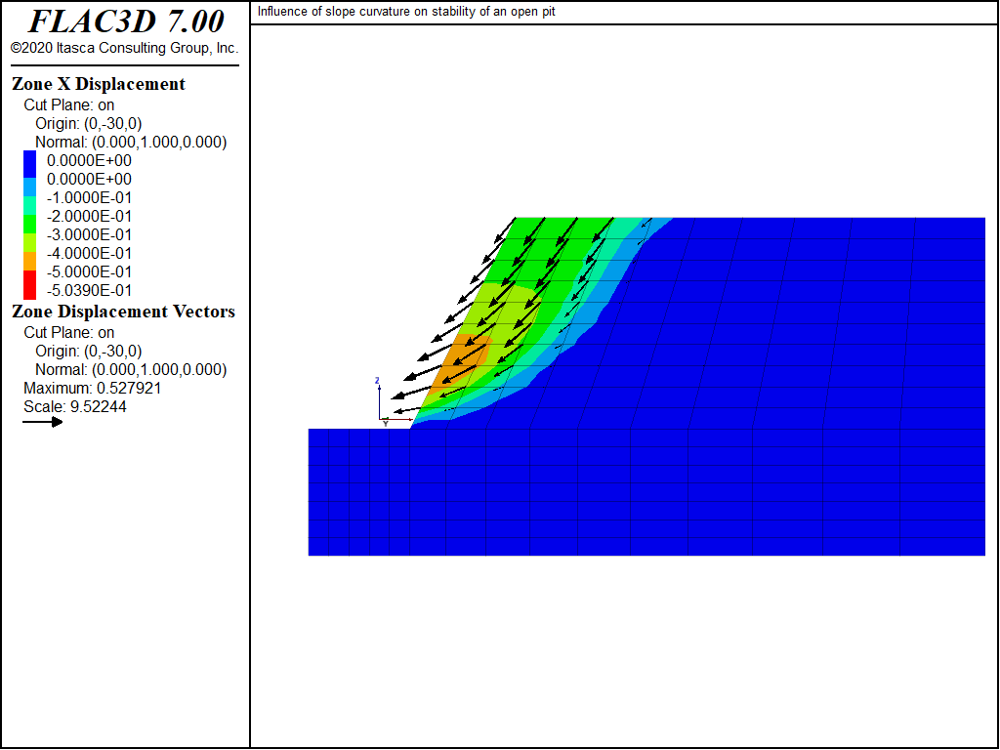
图 11：FLAC3D 模型沿 \(y\) = -30 竖直平面的位移云图和矢量。
参考文献
Hoek, E., and J. W. Bray. Rock Slope Engineering, 3rd Ed. London: The Institute of Mining and Metallurgy (1981).
数据文件
SlopeCurvature.dat
;-------------------------------------------------------------
; 边坡曲率对露天矿稳定性的影响
;-------------------------------------------------------------
model new
model large-strain off
fish automatic-create off
model title 'Influence of slope curvature on stability of an open pit'
; 使用构建块工具创建模型，并从状态记录中导出数据文件
program call 'geometry' suppress
zone generate from-building-blocks set 'CurvedSlope'
; 初始化重力
model gravity 10
; 从 DXF 文件导入地下水位面。
geometry import 'water.dxf'
zone water density 1000
zone water set 'water'
; 分配摩尔–库仑模型和属性
zone cmodel assign mohr-coulomb
zone property bulk 2e8 shear 1e8 friction 45 cohesion 1e5 tension 1e5
; 边界条件
zone gridpoint fix velocity-x range union position-x 0 position-x 80
zone gridpoint fix velocity-y range union position-y -40 position-y 80
zone gridpoint fix velocity range position-z -15
; 初始化非饱和密度
zone initialize density 2500
; 初始化地下水位以下的饱和密度
zone initialize density 2600 ...
range geometry-space 'water' count 1 direction (0,0,1)
; 初始化应力
zone initialize-stresses total
; 历史
history interval 10
model history mechanical ratio-local
zone history displacement-x position (24.5, -40,25)
zone history displacement-z position (24.5, -40,25)
zone history displacement-x position (24.5, 0,25)
zone history displacement-y position (24.5, 0,25)
zone history displacement-z position (24.5, 0,25)
zone history displacement-y position ( 0,24.5,25)
zone history displacement-z position ( 0,24.5,25)
; 计算安全系数
model factor-of-safety ratio-local 1e-3
尾注
| [1] | 要在 FLAC3D 中查看该项目，请使用程序菜单。
⮡ FLAC |
⇐ Failure of a Slope with a Complex Surface Profile in a Mohr-Coulomb Material | Simple Slope in Hoek-Brown Material ⇒
| 这些内容对您有帮助吗？… 版权与免责声明 |
FLAC3D © 2019, Itasca | 原文更新于 2020 年 10 月 8 日 |